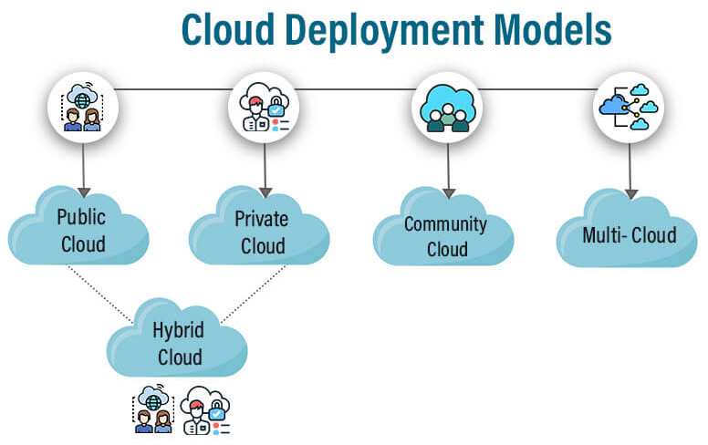

DevOps Basics
Computer Networking Overview:
Computer networking involves the interconnection of computing devices to share resources and information. Here are the main types of networks:
- Personal Area Network (PAN):
- Very small network for personal use
- Typically within a few meters range
- Examples: Bluetooth, NFC
- Local Area Network (LAN):
- Covers a small area like an office or home
- High-speed connectivity
- Examples: Ethernet, Wi-Fi
- Wide Area Network (WAN):
- Spans large geographical areas
- Connects multiple LANs
- Example: The Internet
Each type of network serves different purposes and scales, from personal device connections to global communication infrastructure.
Protocol Types and Their Usage:
- IP (Internet Protocol): Responsible for addressing and routing packets across networks
- TCP (Transmission Control Protocol): Reliable, connection-oriented communication (Port 443)
- UDP (User Datagram Protocol): Fast, connectionless communication for real-time applications (Port 53)
- HTTP/HTTPS: Web communication and secure data transfer (Port 80/443)
- FTP (File Transfer Protocol): File transfer between clients and servers (Port 21)
- SMTP (Simple Mail Transfer Protocol): Email transmission (Port 25)
- DNS (Domain Name System): Domain name resolution to IP addresses (Port 53)
- SSH (Secure Shell): Secure remote access and file transfer (Port 22)
- POP3 (Post Office Protocol version 3): Email retrieval (Port 110)
Important Networking Concepts:
- DNS Architecture:
- Translates domain names to IP addresses
- Enables user-friendly browsing
- Supports hierarchical organization of domains
- IP Addressing:
- IPv4 and IPv6 standards
- Dynamic and static IP addresses
- Private vs. public IPs
OSI Model Layers and Their Details:
- Layer 7 - Application:
- Provides network services to end-user applications
- Examples: HTTP, FTP, SMTP, DNS
- Layer 6 - Presentation:
- Formats and encrypts data for the application layer
- Examples: SSL, TLS, JPEG, MPEG
- Layer 5 - Session:
- Establishes, manages, and terminates sessions between applications
- Examples: NetBIOS, RPC
- Layer 4 - Transport:
- Provides end-to-end communication and reliability
- Examples: TCP, UDP
- Layer 3 - Network:
- Handles routing and addressing of data packets
- Examples: IP, ICMP, OSPF
- Layer 2 - Data Link:
- Provides node-to-node data transfer and error detection
- Examples: Ethernet, PPP, Switch, Bridge
- Layer 1 - Physical:
- Transmits raw bit stream over physical medium
- Examples: Ethernet cable, fiber optic, Wi-Fi

About IP Address
An IP address is a unique numerical label assigned to each device connected to a computer network that uses the Internet Protocol for communication. It serves as a way to identify and locate devices on a network, enabling them to communicate with each other.

Cloud computing
Deployment Models
- Public Cloud: Services are provided over a network that is open for public use.
- Private Cloud: Cloud infrastructure is operated solely for a single organization.
- Hybrid Cloud: Composition of two or more clouds (private, community, or public).
- Community Cloud: Infrastructure is shared by several organizations with shared concerns.

Service Models
- Infrastructure as a Service (IaaS):
- Provides virtualized computing resources over the internet.
- Examples: Amazon EC2, Microsoft Azure VM, Google Compute Engine
- Platform as a Service (PaaS):
- Provides a platform allowing customers to develop, run, and manage applications.
- Examples: Heroku, Google App Engine, Microsoft Azure App Services
- Software as a Service (SaaS):
- Delivers software applications over the internet, on-demand and typically on a subscription basis.
- Examples: Google Workspace, Salesforce, Dropbox

DNS Architecture